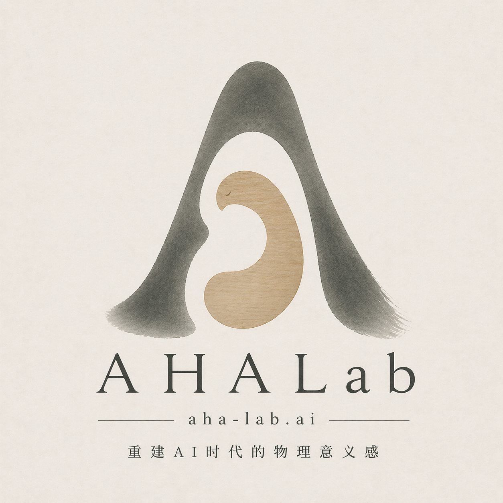
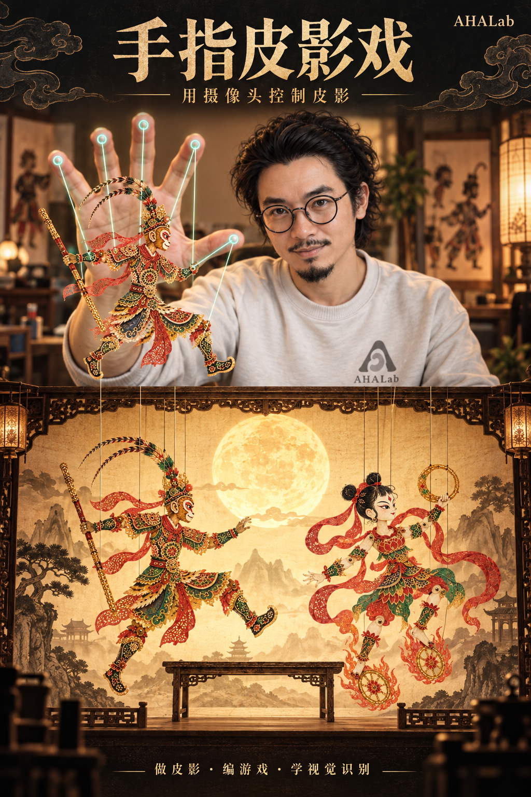

AHALab · 手指皮影戏手指皮影戏
先做一只关节皮影，给它配上道具。摄像头识别手指后，就能用五根手指控制影人的头和四肢，再和同伴编一段戏、做一个游戏。

做一出同学也会玩的皮影戏
怎样让皮影跟着手动，还能让同学拿来就会玩？
先设计自己的角色
给它取名，想一件它要做的事，再画头、身体、四肢和道具。可以用纸剪，也可以在数字画板上画；做好后到舞台试动作，遇到问题再改。
留下角色卡、实体关节皮影、修改前后两稿、控制规则和实验记录，最后演一场两分钟的小戏。
每组 3 至 4 人，轮流操偶、写程序、做测试和安排表演。每个人都要说清自己做过的一次选择，以及后来改了什么。
课堂上怎么做
先做一个动作，把控制规则写下来，再让角色照着动。请同伴试玩，记录哪里没成功，找到原因后再修改。
7 至 9 岁先做角色、练动作表达；年龄较大的学生再学习特征分类、手部模型训练和多人追踪。
一只手固定控制一个角色
| 手的动作 | 角色的回应 | 能学到什么 |
|---|---|---|
| 掌心移动 | 校准后到达舞台位置 | 坐标、镜像、映射与误差 |
| 五指分别伸屈 | 中指转头，食指和无名指动双臂，拇指和小指动双腿 | 关节、夹角与分层动画 |
| 拇指与食指捏合 | 亮月、接住目标 | 比例、阈值与滞回 |
| V 手势 / 竖拇指 / 握拳后张掌 | 跳跃 / 转身 / 使用道具（可开关） | 动作序列、确认时间与冷却 |
| 靠近道具后收拢手指 / 张开手掌 | 拿起并搬动 / 放下道具；半握时保持 | 动作状态、滞回与物品归属 |
| 手掌翻到另一面 | 人物、提偶线与随身道具一起翻面 | 三维朝向与持续确认 |
| 手离场后回来 | 保留原角色，确认后恢复；不确定时手动绑定 | 追踪、重新匹配与异常处理 |
先控制一只影人
校准后移到指定位置，再停住
两手分别控制角色
观察交叉、遮挡后是否换人
四手合作试验
记录同步情况和角色串号
十手展演试验
实测后再确定人数上限
可选影人：孙悟空、哪吒、猪八戒、二郎神、花木兰、玉兔、嫦娥。默认显示提偶线，可切换操纵杆或隐藏连接。
舞台可换成月下山水、花果山、荷塘或灯市。花灯、仙桃、花球和蝴蝶可以搬动，桌子能放东西，鼓和风车会响应。可以按人物组合选择布景，也能自己摆放。
当前程序有十个角色槽位，识别手数也能设为十。真人十手能否稳定操控，还没有验证。十角色演示使用模拟输入，页面会明确标出。
选一套适合学生的课
先按年龄选一套教案，再根据学生的阅读、操作和实验经验调整难度。
| 年龄与课时 | 课堂怎么说、怎么做 | 打开课件 |
|---|---|---|
| 7至9 岁 4 次 × 60 分钟 | “动一动中指，看看哪里动了。” 一次一步，可画图、指认或口述。 | 四次短课 ↗ |
| 10至12 岁 8 次 × 90 分钟 | “只改一个设置，再试同样的目标。” 写规则、记次数，请新同伴试玩。 | 八课详案 ↗ |
| 13至15 岁 8 次 × 90 分钟 | “哪条记录支持你的判断？” 读小段代码，设计对照，说明结果适用范围。 | 八课详案 ↗ |
每课都写了课堂提问、学生可能卡住的地方，以及老师可以怎样帮忙，下课前还有一个小任务。可切换教师详案和五页学生投屏，也可打印记录单。15 岁以上的研究课另排时间。
年龄供备课参考，选课还要看学生已有的阅读、操作和实验经验。下面是 10至12 岁的八课摘要。
L01做一只会动的影人90 分钟
不说名字，怎样让同伴看懂它在做什么？
画出头、身体、四肢和道具，并标出连接处。 让同伴猜一个动作，按他的反馈改一处。
- 会用到的知识
- 轮廓、透光、镂空连接、关节、角色与道具
- 怎么安排
- 10 分钟看轮廓，猜角色 → 10 分钟写角色卡 → 15 分钟试一个关节 → 30 分钟分片制作 → 20 分钟不报名字演动作 → 5 分钟收好两稿
- 留下什么
- 角色卡、标有关节的分片图、同伴猜动作的原话、修改前后两稿。
L02镜头里为什么会认错90 分钟
手被挡住一点，画面上的点会怎么办？
指认手部关键点，区分画面、骨架和角色动作。 只改变遮挡或光照中的一项，记录两种条件。
- 会用到的知识
- 像素、检测、21 个手部关键点、模型输出与规则
- 怎么安排
- 10 分钟先玩再看 → 20 分钟画出识别过程 → 25 分钟遮住一部分再试 → 20 分钟交换记录 → 15 分钟用证据解释
- 留下什么
- 一张标注骨架图、两组条件对照、一例尚不能确定原因的错误。
L03让影人停在想停的地方90 分钟
手不用伸得很远，能走到舞台两边吗？
用舒适的两个角完成校准，并到达中心与边角。 在相同目标上比较两档平滑设置，说明自己的选择。
- 会用到的知识
- 归一化坐标、镜像、范围映射、平滑与延迟
- 怎么安排
- 10 分钟纸上指位置 → 15 分钟预测映射 → 20 分钟校准并轮换 → 30 分钟两档设置做对照 → 15 分钟选择与说明
- 留下什么
- 同一套目标下两档参数记录、一次校准前后比较、参数选择理由。
L04五根手指各管一处90 分钟
怎样让角色只在你想做动作时才动作？
正确连出五指和头、四肢的对应，并试两种拇指动作。 写出一条“当……就……”规则，用成功和误触记录检查它。
- 会用到的知识
- 条件判断、比例、阈值、滞回、持续时间、事件
- 怎么安排
- 10 分钟先猜哪根线会动 → 15 分钟给拇指找合适幅度 → 20 分钟写一条动作规则 → 30 分钟分两类尝试 → 15 分钟拿放道具并复述
- 留下什么
- 五指连线卡、一条条件规则、有意动作 10 次与普通移动 10 次的分开记录。
L05请同伴来玩你的游戏90 分钟
你不站在旁边解释，同学知道要做什么吗？
用现有场景和道具设计一个有完成条件的小任务。 观察两位新玩家，按卡住的地方修改规则。
- 会用到的知识
- 变量、计分、碰撞、状态、游戏反馈
- 怎么安排
- 10 分钟体验一个任务 → 15 分钟在纸上写规则 → 30 分钟布景和自测 → 25 分钟请两位新玩家 → 10 分钟保留一次修改
- 留下什么
- 一张规则卡、一次可运行任务、至少两位新玩家的首次尝试记录及一次修改。
L06两只手，别换错角色90 分钟
你和同伴换了位置，角色还跟着原来的手吗？
用编号区分“谁”和“在哪里”。 按同样步骤测试两手交换、遮挡和离场，记录有无换错。
- 会用到的知识
- 检测与追踪、唯一 ID、数据关联、遮挡、降级
- 怎么安排
- 10 分钟先玩编号卡 → 15 分钟写绑定约定 → 30 分钟三种情景各试三次 → 20 分钟找回离场角色 → 15 分钟告诉下一组
- 留下什么
- 三种情景各三次的身份记录、一个可复现的失败步骤、一句有条件的能力说明。
L07换个人，它还认得吗90 分钟
它认识了我的手，能不能认识你的手？
把采样者和测试者分开，记录每类采了几段。 用未参与采样者的尝试，说明它会认错哪些动作。
- 会用到的知识
- 特征、标签、训练集、测试集、分类器、混淆矩阵
- 怎么安排
- 10 分钟先猜换人结果 → 20 分钟分段采集 → 20 分钟看输出并试用 → 25 分钟让 B 独立测试 → 15 分钟回看预测
- 留下什么
- 按人和段记录的数据卡、未参与采样者的分类结果、错误或拒绝案例、适用范围说明。
L08排一段戏，请同学来看90 分钟
观众能看懂发生了什么，也能学会怎么玩吗？
用角色、场景和道具演出有开头和结尾的两分钟故事。 每人用一次观察解释自己的修改。
- 会用到的知识
- 叙事、可用性、测量、署名、反思
- 怎么安排
- 15 分钟排出故事顺序 → 20 分钟小组排演 → 25 分钟演出和邀请体验 → 20 分钟听反馈，讲修改 → 10 分钟整理作品
- 留下什么
- 两分钟作品、每人一次具体讲解、一张观众反馈单和下一版的一项改动。
这套课仍是备课草案，尚未试教。第七课可以在本机用 kNN 学习个人动作；手部 Pose 神经网络训练仍安排在延展课。
看看它为什么会认错
课堂用 MediaPipe，研究课再看 YOLO
课堂先用 MediaPipe 识别手部关键点。YOLO26 通用 Pose 权重识别的是人体骨架；要控制手指，需要另外训练或取得手部模型，留给年龄较大的学生做研究。
测一测有多准
用五点定位看位置误差，另外记录停手时的抖动、从手移动到画面响应的延迟、手势误触和角色换错的情况。参数上限、推理帧率和实际可玩人数也要分开验证。
识别在本机运行，不自动录像。目前可以用键鼠练习或开启摄像头，玩接月游戏，也可以把皮影放到透明桌面窗口里；另有个人手势分类功能。多屏、积木编辑器和手部关键点模型训练还没有实现。
先演一段，再写一件事
把《我来编童话》《故事新编》《变形记》等十个习作任务搬到皮影舞台。先编一段、演给同伴看，留下动作和对话，再写自己的文章。每个任务有教师备课、三格故事、观察记录和修改问题。
可以自选角色与布景，自己的台词会显示在舞台提词器。习作保存在当前浏览器，支持打印、导出和备份。这些任务对应三至六年级的习作单元，使用时请以本班教材为准。
一句台词，一个动作
给影人排一段英语小戏。先听老师领读，人工圈出需要帮助的词，再轮换旁白、对白和操偶。三份分龄教案配六出短剧。舞台里可以听示范、开麦克风跟读，再把台词和动作合起来演。
可替换 J04 或 L08 的故事内容，原课时不增加。已支持逐句录音、回听和跟读变色：提词器上下句灰色、当前句黑色；读到并达到练习线的词变蓝，其他词保持原样。老师可按年龄调节点亮门槛。发音分尚未用儿童语音校准，需教师复核。
课程资料和代码
本项目仍在课程研发区，尚未公开发布。下一步先用真人单手、双手测试定位、误触和交叉时的角色归属，再根据结果决定四手、十手版本怎么做。